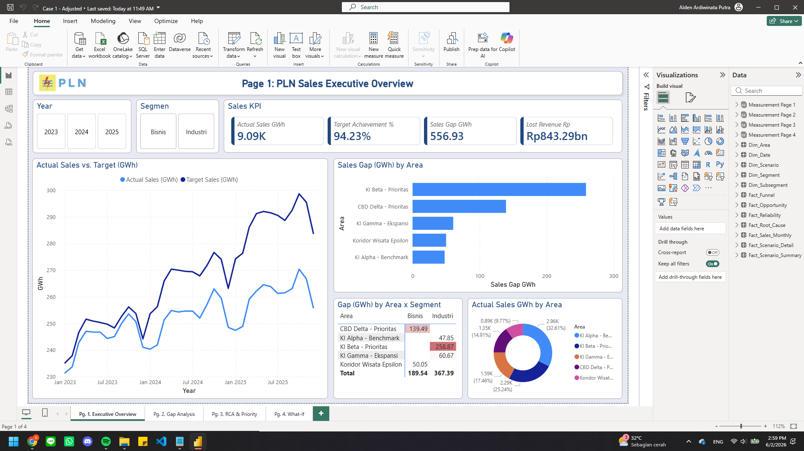
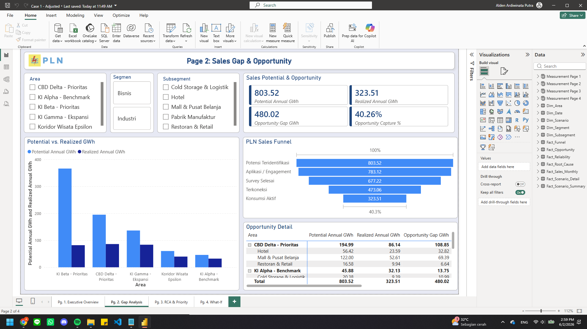
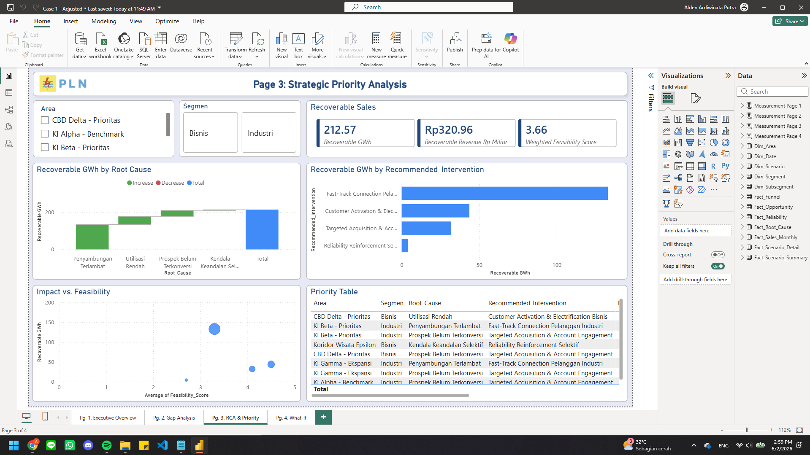
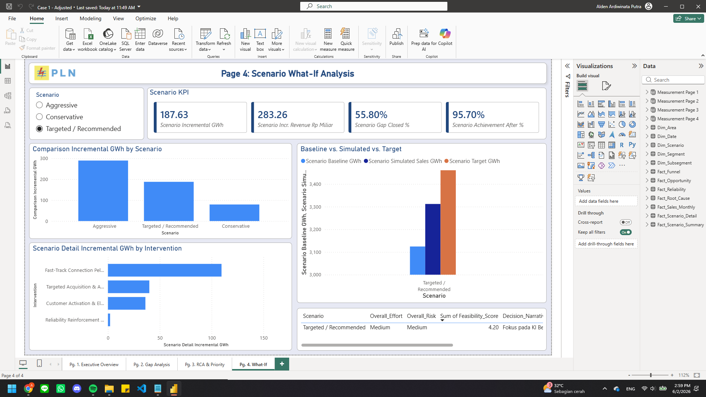

1. Latar Belakang Kasus
Selama tiga tahun terakhir, pertumbuhan penjualan listrik pada segmen Industri dan Bisnis di Wilayah PLN X cenderung tertahan. Padahal, wilayah ini sedang berkembang melalui kawasan industri, pusat bisnis, hotel, restoran, dan fasilitas komersial baru.
Manajemen perlu memahami apakah stagnasi disebabkan oleh rendahnya potensi pasar, rendahnya konversi pelanggan baru, kendala penyambungan, utilisasi pelanggan aktif, atau faktor operasional tertentu.
Peran Peserta
Anda berperan sebagai tim manajemen PLN Wilayah X yang diminta memberikan rekomendasi strategi pertumbuhan penjualan.
Sales GapOpportunity GapRoot CauseStrategic PriorityWhat-if Scenario2. Cara Membaca Dashboard
| Page | Judul Final Dashboard | Pertanyaan Manajerial | Output Peserta |
|---|---|---|---|
| 1 | PLN Sales Executive Overview | Apakah gap penjualan nyata dan di mana masalah terkonsentrasi? | Area/segmen prioritas untuk investigasi. |
| 2 | Sales Gap & Opportunity | Apakah pasar tidak ada, atau peluang belum terealisasi? | Diagnosis opportunity leakage dan funnel konversi. |
| 3 | Strategic Priority Analysis | Akar masalah apa yang paling actionable? | Prioritas intervensi berdasarkan recoverable sales dan feasibility. |
| 4 | Scenario What-if Analysis | Skenario mana yang memberi dampak terbaik dengan risiko realistis? | Rekomendasi skenario dan estimasi dampak. |
Page 1 — PLN Sales Executive Overview

Tujuan Page
Menentukan apakah gap penjualan benar-benar material, apakah tren aktual tertinggal dari target, dan area/segmen mana yang perlu menjadi fokus investigasi.
Visual yang Perlu Diamati
| Visual | Apa yang Dicari | Pertanyaan Peserta |
|---|---|---|
| KPI Actual Sales, Achievement, Gap, Lost Revenue | Skala masalah penjualan secara agregat. | Apakah gap cukup besar untuk ditindaklanjuti? |
| Actual Sales vs Target | Jarak aktual terhadap target sepanjang waktu. | Apakah masalah muncul konsisten atau hanya satu bulan? |
| Sales Gap by Area | Area dengan gap terbesar. | Area mana yang paling menahan pertumbuhan wilayah? |
| Gap by Area x Segment | Segmen penyumbang gap di masing-masing area. | Apakah masalah dominan di Industri atau Bisnis? |
| Actual Sales by Area | Kontribusi aktual tiap area. | Apakah area dengan penjualan besar juga memiliki gap besar? |
Langkah Eksplorasi Peserta
- Lihat KPI tanpa filter untuk memahami total sales gap dan lost revenue.
- Amati line chart actual vs target untuk melihat apakah gap melebar sepanjang periode.
- Lihat bar chart Sales Gap by Area untuk menemukan area prioritas.
- Gunakan matrix Gap by Area x Segment untuk mengidentifikasi segmen dominan di tiap area.
- Klik area KI Beta - Prioritas dan CBD Delta - Prioritas untuk membandingkan karakter masalah.
Pertanyaan Peserta
| No. | Pertanyaan |
|---|---|
| 1 | Apakah gap penjualan cukup material terhadap target? |
| 2 | Area mana yang paling banyak menyumbang sales gap? |
| 3 | Apakah gap tersebut lebih dominan pada segmen Industri atau Bisnis? |
| 4 | Apakah perlu strategi seluruh wilayah, atau cukup fokus pada area tertentu dahulu? |
Catatan Peserta
Page 2 — Sales Gap & Opportunity

Tujuan Page
Menguji apakah stagnasi disebabkan oleh tidak adanya potensi pasar atau karena potensi yang sudah ada belum berhasil berubah menjadi konsumsi listrik aktual.
Visual yang Perlu Diamati
| Visual | Apa yang Dicari | Pertanyaan Peserta |
|---|---|---|
| KPI Potential, Realized, Opportunity Gap, Capture Rate | Besarnya peluang dan tingkat realisasi. | Apakah potensi pasar tersedia? |
| Potential vs Realized GWh | Area dengan jarak terbesar antara potensi dan realisasi. | Area mana yang memiliki peluang belum tertangkap terbesar? |
| PLN Sales Funnel | Tahap konversi yang mengalami penurunan terbesar. | Di tahap mana peluang paling banyak hilang? |
| Opportunity Detail | Subsegmen dengan potential dan opportunity gap tertinggi. | Jenis pelanggan apa yang perlu difokuskan? |
Langkah Eksplorasi Peserta
- Lihat KPI total: potential, realized, opportunity gap, dan capture rate.
- Bandingkan area pada chart Potential vs. Realized GWh.
- Pilih area KI Beta - Prioritas untuk melihat gap industri terbesar.
- Pilih area CBD Delta - Prioritas untuk melihat peluang bisnis yang belum optimal.
- Amati funnel: tentukan apakah masalah terjadi sebelum koneksi atau setelah pelanggan aktif.
- Gunakan tabel Opportunity Detail untuk melihat subsegmen seperti pabrik, mall, hotel, restoran, atau cold storage.
Pertanyaan Peserta
| No. | Pertanyaan |
|---|---|
| 1 | Apakah stagnasi terjadi karena potensi pasar tidak tersedia? |
| 2 | Area mana yang memiliki opportunity gap terbesar? |
| 3 | Apakah leakage terbesar terjadi pada tahap engagement, survey, koneksi, atau konsumsi aktif? |
| 4 | Subsegmen apa yang menjadi target paling relevan? |
Catatan Peserta
Page 3 — Strategic Priority Analysis

Tujuan Page
Mengubah diagnosis menjadi prioritas tindakan: akar masalah mana yang paling material, recoverable, dan layak dieksekusi.
Visual yang Perlu Diamati
| Visual | Apa yang Dicari | Pertanyaan Peserta |
|---|---|---|
| KPI Recoverable GWh, Revenue, Feasibility | Potensi yang realistis ditindaklanjuti dan kelayakan rata-rata. | Berapa besar peluang yang benar-benar recoverable? |
| Recoverable GWh by Root Cause | Akar masalah terbesar. | Penyebab mana yang paling material? |
| Recoverable GWh by Recommended Intervention | Program dengan potensi terbesar. | Intervensi apa yang harus diprioritaskan? |
| Impact vs Feasibility | Trade-off antara dampak dan kemudahan. | Apakah strategi terbesar juga paling feasible? |
| Priority Table | Area, segmen, root cause, dan intervensi. | Di mana intervensi harus dilakukan? |
Langkah Eksplorasi Peserta
- Lihat total recoverable sales dan recoverable revenue.
- Amati waterfall Root Cause untuk melihat driver terbesar.
- Bandingkan bar Recommended Intervention.
- Klik KI Beta - Prioritas dan lihat apakah intervensinya terkait pelanggan industri.
- Klik CBD Delta - Prioritas dan lihat apakah intervensinya terkait aktivasi/utilisasi bisnis.
- Gunakan scatter untuk membahas trade-off antara dampak dan feasibility.
Pertanyaan Peserta
| No. | Pertanyaan |
|---|---|
| 1 | Akar masalah mana yang paling besar menyumbang recoverable sales? |
| 2 | Intervensi apa yang paling berdampak? |
| 3 | Mana yang menjadi strategi utama dan mana yang menjadi quick win? |
| 4 | Apakah reliability perlu menjadi solusi utama seluruh wilayah? |
Catatan Peserta
Page 4 — Scenario What-if Analysis

Tujuan Page
Melihat dampak skenario strategi terhadap incremental sales, incremental revenue, gap closed, dan target achievement setelah intervensi.
Visual yang Perlu Diamati
| Visual | Apa yang Dicari | Pertanyaan Peserta |
|---|---|---|
| Scenario Selector | Conservative, Targeted / Recommended, Aggressive. | Skenario mana yang paling layak direkomendasikan? |
| Scenario KPI | Incremental GWh, revenue, gap closed, achievement after. | Seberapa besar dampak strategi? |
| Comparison Incremental GWh | Perbandingan dampak antar skenario. | Apakah dampak terbesar otomatis terbaik? |
| Baseline vs Simulated vs Target | Posisi sales setelah skenario terhadap target. | Apakah skenario cukup menutup gap? |
| Scenario Detail Incremental by Intervention | Kontribusi program terhadap incremental sales. | Intervensi mana yang paling berkontribusi? |
Langkah Eksplorasi Peserta
- Pilih Conservative untuk melihat dampak minimum.
- Pilih Targeted / Recommended untuk melihat strategi fokus KI Beta dan CBD Delta.
- Pilih Aggressive untuk melihat dampak maksimum dan diskusikan risiko/effort.
- Kembali ke Targeted / Recommended dan amati kontribusi intervensi.
- Susun rekomendasi akhir berdasarkan dampak, feasibility, dan fokus area.
Pertanyaan Peserta
| No. | Pertanyaan |
|---|---|
| 1 | Skenario mana yang memberikan perbaikan signifikan tetapi masih realistis? |
| 2 | Apa driver utama incremental sales dalam skenario Targeted? |
| 3 | Mengapa skenario Aggressive tidak otomatis menjadi pilihan utama? |
| 4 | Apakah strategi akhir lebih tepat berupa satu program atau portofolio intervensi? |
Catatan Peserta
Template Jawaban Akhir Peserta
| Komponen | Isi Jawaban Peserta |
|---|---|
| Diagnosis utama | Apa penyebab utama stagnasi penjualan? |
| Area/segmen prioritas | Area dan segmen mana yang perlu difokuskan? |
| Root cause utama | Akar masalah apa yang paling recoverable? |
| Program prioritas | Dua atau tiga intervensi yang direkomendasikan. |
| Dampak simulasi | Tambahan GWh, revenue, gap closed, dan achievement setelah intervensi. |
| Risiko/asumsi | Prasyarat implementasi atau risiko yang perlu dikendalikan. |